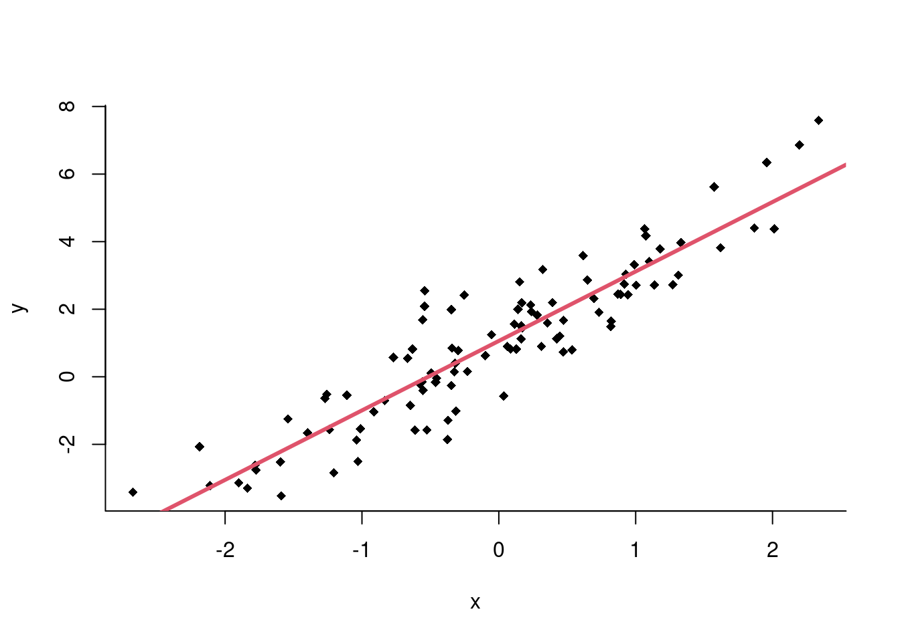

2 * 7[1] 140 / 0[1] NaN10^1000[1] Inflog(1)[1] 0exp(1)[1] 2.718282Aqui faremos uma breve introdução ao R. Para uma introdução mais delhada, veja https://curso-r.com/material/ e https://r4ds.had.co.nz/.
Aqui vão alguns exemplos para começarmos a entender como o R funciona. Inicialmente, veremos como podemos usar o R como calculadora.
2 * 7[1] 140 / 0[1] NaN10^1000[1] Inflog(1)[1] 0exp(1)[1] 2.718282Para entender o que uma função faz, você pode digitar o símbolo de interrogação seguido do nome da função, por exemplo:
?expO help contém as seguintes informações:
Podemos também armazenar resultados de contas em variáveis. Por exemplo:
x = 2 + 3
x[1] 5y = 2 * x
y[1] 10print(y)[1] 10Números grandes são impressos usando notação científica:
y = 2 * 10^10
print(y)[1] 2e+10Para listar quais variáveis estão declaradas no ambiente, podemos usar:
ls()[1] "x" "y"Para remover uma variável:
rm(x)
ls()[1] "y"Para remover todas as variáveis existentes:
rm(list = ls()) # Essa função apaga todas as variáveis existentes
gc() # Essa função libera a memória utilizada used (Mb) gc trigger (Mb) max used (Mb)
Ncells 597557 32.0 1233144 65.9 1233144 65.9
Vcells 1108663 8.5 8388608 64.0 1819262 13.9Alguns operadores lógicos definidos no R são mostrados na tabela abaixo:
| # | Operador | Descrição |
|---|---|---|
| 1 | x < y | x menor que y? |
| 2 | x <= y | x menor ou igual a y? |
| 3 | x > y | x maior que y? |
| 4 | x >= y | x maior ou igual a y? |
| 5 | x == y | x igual a y? |
| 6 | x != y | x diferente de y? |
| 7 | !x | Negativa de x |
| 8 | x | y | x ou y são verdadeiros? |
| 9 | x & y | x e y são verdadeiros? |
| 10 | xor(x, y) | Apenas um dos dois é verdadeiro? |
1 == 3[1] FALSE1 == 1[1] TRUE1 <= 3[1] TRUEx = 1 > 3
print(x)[1] FALSEx = 1; y = 3
x < y[1] TRUE(x == 1) & (y == 3)[1] TRUE(x == 1) & (y != 3)[1] FALSE!TRUE[1] FALSEx = TRUE; y = FALSE
x | y[1] TRUEO número um tem o valor verdadeiro, e o número zero tem o valor falso:
x = 1; y = 0
x | y[1] TRUENote que ao fazermos contas com variáveis lógicas, elas são transformadas em zero e um:
(TRUE | FALSE) + 2[1] 3Para declarar cadeias de caracteres, usamos aspas no R:
x = "Rafael"
y = "Izbicki"Várias operações podem ser feitas com esses objetos. Um exemplo é a função paste:
paste(x, y)[1] "Rafael Izbicki"paste(x, y, sep = "+")[1] "Rafael+Izbicki"Usualmente declaramos vetores usando o operador c (concatenação):
x = c(2, 5, 7, 1)
x[1] 2 5 7 1Para acessar seus componentes, fazemos:
x[2][1] 5# [1] 5
x = x[c(2, 3)]
x[2:3][1] 7 NAx[-c(2, 3)][1] 5As operações x[c(2, 3)] e x[-c(2, 3)] são chamadas de subsetting; subsetting é a seleção de um subconjunto de um objeto. Veremos mais à frente outras maneiras de fazermos isso.
Podemos mudar alguns dos valores deste vetor usando:
x[2:3] = 0
x[1] 5 0 0Operações aritméticas podem ser facilmente feitas para cada elemento de um vetor. Alguns exemplos:
x = x - 1
x[1] 4 -1 -1x = 2 * x
x[1] 8 -2 -2Uma função útil para criar vetores é a seq:
x = seq(from = 1, to = 100, by = 2)
x [1] 1 3 5 7 9 11 13 15 17 19 21 23 25 27 29 31 33 35 37 39 41 43 45 47 49
[26] 51 53 55 57 59 61 63 65 67 69 71 73 75 77 79 81 83 85 87 89 91 93 95 97 99y = seq(from = 1, to = 100, length = 5)
y[1] 1.00 25.75 50.50 75.25 100.00Podemos também usar operadores lógicos em vetores:
x > 5 [1] FALSE FALSE FALSE TRUE TRUE TRUE TRUE TRUE TRUE TRUE TRUE TRUE
[13] TRUE TRUE TRUE TRUE TRUE TRUE TRUE TRUE TRUE TRUE TRUE TRUE
[25] TRUE TRUE TRUE TRUE TRUE TRUE TRUE TRUE TRUE TRUE TRUE TRUE
[37] TRUE TRUE TRUE TRUE TRUE TRUE TRUE TRUE TRUE TRUE TRUE TRUE
[49] TRUE TRUENote que x > 5 é um vetor lógico.
Podemos usar as operações lógicas em vetores lógicos:
x = c(TRUE, TRUE, FALSE, FALSE)
y = c(TRUE, FALSE, TRUE, FALSE)
x | y[1] TRUE TRUE TRUE FALSEx & y[1] TRUE FALSE FALSE FALSEOperadores lógicos também podem ser usados para fazer subsetting:
x[x > 5] = 0
x[1] 1 1 0 0x[!(x <= 0)] = -1
x[1] -1 -1 0 0Podemos ter vetores de caracteres:
x = c("a", "c", "fgh")
x[-c(2, 3)][1] "a"paste(x, "add")[1] "a add" "c add" "fgh add"paste(x, "add", collapse = "+")[1] "a add+c add+fgh add"Algumas funções adicionais úteis:
rep(2, 5)[1] 2 2 2 2 2rep(c(1, 2), 5) [1] 1 2 1 2 1 2 1 2 1 2rep(c(1, 2), each = 5) [1] 1 1 1 1 1 2 2 2 2 2sort(c(5, 10, 0, 20))[1] 0 5 10 20order(c(5, 10, 0, 20))[1] 3 1 2 4Para declarar funções em R, fazemos:
minhaFuncao <- function(argumento1, argumento2) {
# corpo da função
}Por exemplo:
potencia <- function(x, y) {
return(x^y)
}
potencia(2, 3)[1] 8# [1] 8Note que x e y podem ser vetores:
potencia(x = c(1, 2, 3), y = c(0, 1, 2))[1] 1 2 9Você pode inverter a ordem dos argumentos, desde que eles sejam nomeados:
potencia(y = c(0, 1, 2), x = c(1, 2, 3))[1] 1 2 9Os argumentos podem ter valores default. Por exemplo:
potencia <- function(x, y = rep(1, length(x))) {
return(x^y)
}Neste caso, se o argumento y não for fornecido, ele será um vetor de uns do tamanho de x:
potencia(2)[1] 2potencia(2, 3)[1] 8Para calcular o fatorial de um número n, podemos usar um laço while:
n <- 4
i <- 1
nFatorial <- 1
while(i <= n) {
nFatorial <- nFatorial * i
i <- i + 1
}
nFatorial[1] 24Ou podemos usar um laço for:
n <- 4
nFatorial <- 1
for(i in 1:n) {
nFatorial <- nFatorial * i
}
nFatorial[1] 24Lembre-se de que laços podem ser lentos no R, especialmente se o tamanho do objeto não for previamente declarado. Vamos comparar o tempo de execução de diferentes abordagens usando a função system.time. Para isso, vamos calcular a soma acumulada de um vetor.
x <- 1:100000aux <- function(x) {
somaAcumulada <- NULL
somaAcumulada[1] <- x[1]
for(i in 2:length(x)) {
somaAcumulada[i] <- somaAcumulada[i - 1] + x[i]
}
}
system.time(aux(x))[1]user.self
0.018 aux <- function(x) {
somaAcumulada <- rep(NA, length(x))
somaAcumulada[1] <- x[1]
for(i in 2:length(x)) {
somaAcumulada[i] <- somaAcumulada[i - 1] + x[i]
}
}
system.time(aux(x))[1]user.self
0.008 aux <- function(x) {
cumsum(x)
}
system.time(aux(x))[1]user.self
0 Note que, em geral, funções nativas do R são muito mais rápidas.
O R permite o uso de condicionais if e else para controlar o fluxo de execução. A sintaxe básica é:
if (condição1) {
# código se a condição1 for verdadeira
} else if (condição2) {
# código se a condição1 for falsa e condição2 verdadeira
} else {
# código se todas as condições forem falsas
}Exemplo:
testaX <- function(x) {
if (!is.numeric(x)) {
print("x não é um número")
} else if (x > 0) {
print("x é positivo")
} else if (x < 0) {
print("x é negativo")
} else {
print("x é nulo")
}
}
testaX(5)[1] "x é positivo"testaX(-5)[1] "x é negativo"testaX("5")[1] "x não é um número"Listas são como vetores, mas podem conter componentes de diferentes tipos (inclusive outras listas).
minhaLista <- list("um", TRUE, 3, c("q", "u", "a", "t", "r", "o"), "cinco")
minhaLista[[3]][1] 3Você também pode atribuir nomes aos elementos de uma lista:
minhaLista <- list(primeiro = "um", segundo = TRUE, terceiro = 3,
quarto = c("q", "u", "a", "t", "r", "o"), quinto = "cinco")
minhaLista$quinto[1] "cinco"Listas são frequentemente usadas para retornar várias saídas de uma função. Por exemplo, ao ajustar um modelo de regressão linear, os resultados são armazenados em uma lista:
x <- rnorm(100)
y <- 1 + 2*x + rnorm(length(x), 0.1)
ajuste <- lm(y ~ x)
typeof(ajuste)[1] "list"Os componentes da lista podem ser acessados com:
names(ajuste) [1] "coefficients" "residuals" "effects" "rank"
[5] "fitted.values" "assign" "qr" "df.residual"
[9] "xlevels" "call" "terms" "model" Para ver os coeficientes ajustados:
ajuste$coefficients(Intercept) x
1.135790 1.866057 Para adicionar a reta estimada ao gráfico:
plot(x, y, pch = 18, bty = "l")
abline(ajuste, col = 2, lwd = 3)
Você também pode inicializar uma lista vazia:
minhaLista <- list()O R é uma ferramenta poderosa para realizar análises descritivas. Vamos explorar alguns recursos para calcular estatísticas de variáveis quantitativas e qualitativas.
x <- c(30, 1, 20, 5, 20, 60)
y <- c(12, 0, 2, 15, 22, 20)
mean(x)[1] 22.66667var(x)[1] 448.6667min(x)[1] 1which.min(x)[1] 2max(x)[1] 60which.max(x)[1] 6sort(x)[1] 1 5 20 20 30 60order(x)[1] 2 4 3 5 1 6median(x)[1] 20cor(x, y)[1] 0.5229211which(x > 10)[1] 1 3 5 6mean(y[x > 10])[1] 14x <- c("S", "R", "P", "P", "Q", "P")
y <- c("a", "a", "b", "a", "c", "d")
x[y %in% c("a", "c")][1] "S" "R" "P" "Q"table(x)x
P Q R S
3 1 1 1 table(x, y) y
x a b c d
P 1 1 0 1
Q 0 0 1 0
R 1 0 0 0
S 1 0 0 0Podemos utilizar subsetting para trabalhar com subconjuntos de interesse. Por exemplo, suponha que dados é um banco de dados com informações de alunos e queremos selecionar os alunos com idade menor que 20, altura maior que 1,70 e que estejam no primeiro ou segundo ano.
dados[dados$idade < 20 & dados$altura > 1.70 & dados$ano %in% c("Primeiro", "Segundo"), ]As funções da família apply (como apply, lapply, sapply) são úteis para aplicar uma função a um conjunto de dados. Vamos criar um banco de dados artificial para exemplificar:
dados <- data.frame(altura = rnorm(100, 1.7, 0.2), salario = rnorm(100, 3000, 500))
dados$peso <- dados$altura * 35 + rnorm(100, 0, 10)applyPara calcular a média de cada coluna de dados, usamos:
apply(dados, 2, mean) altura salario peso
1.710473 2988.055389 60.992266 Aqui, o argumento 2 indica que a operação deve ser aplicada a cada coluna. Para calcular a soma de cada linha:
apply(dados, 1, sum) [1] 2911.838 3769.416 2912.299 3347.178 2383.554 3876.320 3330.492 2514.929
[9] 3066.566 3730.918 2402.553 2785.478 3033.978 2822.992 3520.693 1971.550
[17] 3933.787 2856.112 2354.025 2514.189 2797.358 2529.497 3402.361 2832.829
[25] 3118.888 3740.606 3345.657 3409.336 3178.316 3520.608 3296.911 3194.070
[33] 3821.713 1990.506 2007.626 3226.723 3297.293 3742.610 2142.641 3639.341
[41] 3559.029 3200.996 2899.059 2882.812 2758.623 2812.087 3250.782 2346.604
[49] 3098.008 3539.852 3141.936 3260.350 3414.950 3415.215 2331.877 3169.164
[57] 2309.428 2486.674 3110.727 2694.606 2089.227 2672.903 2940.053 2439.934
[65] 2518.311 4166.452 3230.751 2671.893 2880.491 3301.666 4241.895 2515.057
[73] 2813.697 3019.003 3271.548 3243.474 3686.880 3402.025 2665.857 2686.478
[81] 2391.130 2919.513 2701.225 3610.194 3321.123 3659.904 3183.225 3037.318
[89] 3356.966 2516.306 3219.418 3789.430 3242.440 2692.558 3129.225 2233.045
[97] 3485.102 2786.062 3564.407 3823.087Usando funções anônimas, podemos calcular várias estatísticas descritivas ao mesmo tempo:
estatisticas <- apply(dados, 2, function(x) {
listaResultados <- list()
listaResultados$media <- mean(x)
listaResultados$mediaAparada <- mean(x, trim = 0.1)
listaResultados$mediana <- median(x)
listaResultados$maximo <- max(x)
return(listaResultados)
})
estatisticas$altura$media
[1] 1.710473
$mediaAparada
[1] 1.708842
$mediana
[1] 1.695873
$maximo
[1] 2.154841%>% (pipe)O operador pipe foi uma das grandes revoluções recentes do R, tornando o código mais legível. Esse operador está definido no pacote magrittr, e vários outros pacotes, como o dplyr, fazem uso dele (veja a próxima seção).
A ideia é simples: o operador %>% usa o resultado do lado esquerdo como o primeiro argumento da função do lado direito. Um exemplo:
library(magrittr)
x <- c(1, 2, 3, 4)
x %>% sum() %>% sqrt()[1] 3.162278Isso é equivalente a:
sqrt(sum(x))[1] 3.162278Mas a leitura com pipe é mais clara. No RStudio, você pode inserir o pipe com o atalho ctrl + shift + m.
O pipe envia o valor à esquerda apenas para o primeiro argumento da função à direita. Para utilizar o valor da esquerda em outro argumento, utilize o ".":
y <- rnorm(10)
y %>% plot(x = 1:length(y), y = ., pch = 18)dplyrO pacote dplyr é muito útil para manipulação eficiente de data frames. Vamos demonstrar alguns exemplos usando o conjunto de dados hflights.
library(dplyr)
library(hflights)
data(hflights)Primeiro, converta os dados para o formato tbl_df, uma variação mais amigável do data.frame:
flights <- tbl_df(hflights)A função filter retorna todas as linhas que satisfazem uma condição. Por exemplo, para mostrar todos os voos do dia 1º de janeiro:
flights %>% filter(Month == 1, DayofMonth == 1)# A tibble: 552 × 21
Year Month DayofMonth DayOfWeek DepTime ArrTime UniqueCarrier FlightNum
<int> <int> <int> <int> <int> <int> <chr> <int>
1 2011 1 1 6 1400 1500 AA 428
2 2011 1 1 6 728 840 AA 460
3 2011 1 1 6 1631 1736 AA 1121
4 2011 1 1 6 1756 2112 AA 1294
5 2011 1 1 6 1012 1347 AA 1700
6 2011 1 1 6 1211 1325 AA 1820
7 2011 1 1 6 557 906 AA 1994
8 2011 1 1 6 1824 2106 AS 731
9 2011 1 1 6 654 1124 B6 620
10 2011 1 1 6 1639 2110 B6 622
# ℹ 542 more rows
# ℹ 13 more variables: TailNum <chr>, ActualElapsedTime <int>, AirTime <int>,
# ArrDelay <int>, DepDelay <int>, Origin <chr>, Dest <chr>, Distance <int>,
# TaxiIn <int>, TaxiOut <int>, Cancelled <int>, CancellationCode <chr>,
# Diverted <int>Para condições alternativas, podemos usar o operador | (ou) ou %in%:
flights %>% filter(UniqueCarrier %in% c("AA", "UA"))# A tibble: 5,316 × 21
Year Month DayofMonth DayOfWeek DepTime ArrTime UniqueCarrier FlightNum
<int> <int> <int> <int> <int> <int> <chr> <int>
1 2011 1 1 6 1400 1500 AA 428
2 2011 1 2 7 1401 1501 AA 428
3 2011 1 3 1 1352 1502 AA 428
4 2011 1 4 2 1403 1513 AA 428
5 2011 1 5 3 1405 1507 AA 428
6 2011 1 6 4 1359 1503 AA 428
7 2011 1 7 5 1359 1509 AA 428
8 2011 1 8 6 1355 1454 AA 428
9 2011 1 9 7 1443 1554 AA 428
10 2011 1 10 1 1443 1553 AA 428
# ℹ 5,306 more rows
# ℹ 13 more variables: TailNum <chr>, ActualElapsedTime <int>, AirTime <int>,
# ArrDelay <int>, DepDelay <int>, Origin <chr>, Dest <chr>, Distance <int>,
# TaxiIn <int>, TaxiOut <int>, Cancelled <int>, CancellationCode <chr>,
# Diverted <int>A função select seleciona colunas específicas de um data frame. Para selecionar as colunas DepTime, ArrTime, e FlightNum:
flights %>% select(DepTime, ArrTime, FlightNum)# A tibble: 227,496 × 3
DepTime ArrTime FlightNum
<int> <int> <int>
1 1400 1500 428
2 1401 1501 428
3 1352 1502 428
4 1403 1513 428
5 1405 1507 428
6 1359 1503 428
7 1359 1509 428
8 1355 1454 428
9 1443 1554 428
10 1443 1553 428
# ℹ 227,486 more rowsPara selecionar todas as colunas que contêm “Taxi” ou “Delay”:
flights %>% select(contains("Taxi"), contains("Delay"))# A tibble: 227,496 × 4
TaxiIn TaxiOut ArrDelay DepDelay
<int> <int> <int> <int>
1 7 13 -10 0
2 6 9 -9 1
3 5 17 -8 -8
4 9 22 3 3
5 9 9 -3 5
6 6 13 -7 -1
7 12 15 -1 -1
8 7 12 -16 -5
9 8 22 44 43
10 6 19 43 43
# ℹ 227,486 more rowsA função arrange ordena o data frame de acordo com algum critério. Para ordenar pelo atraso de partida (DepDelay):
flights %>% arrange(DepDelay)# A tibble: 227,496 × 21
Year Month DayofMonth DayOfWeek DepTime ArrTime UniqueCarrier FlightNum
<int> <int> <int> <int> <int> <int> <chr> <int>
1 2011 12 24 6 1112 1314 OO 5440
2 2011 2 14 1 1917 2027 MQ 3328
3 2011 4 10 7 2101 2206 XE 2669
4 2011 8 3 3 1741 1810 XE 2603
5 2011 1 18 2 1542 1936 CO 1688
6 2011 10 4 2 1438 1813 EV 5412
7 2011 1 26 3 2248 2343 XE 2450
8 2011 3 8 2 953 1156 CO 1882
9 2011 3 18 5 2103 2156 XE 2261
10 2011 4 3 7 1048 1307 MQ 3796
# ℹ 227,486 more rows
# ℹ 13 more variables: TailNum <chr>, ActualElapsedTime <int>, AirTime <int>,
# ArrDelay <int>, DepDelay <int>, Origin <chr>, Dest <chr>, Distance <int>,
# TaxiIn <int>, TaxiOut <int>, Cancelled <int>, CancellationCode <chr>,
# Diverted <int>Para ordem decrescente:
flights %>% arrange(desc(DepDelay))# A tibble: 227,496 × 21
Year Month DayofMonth DayOfWeek DepTime ArrTime UniqueCarrier FlightNum
<int> <int> <int> <int> <int> <int> <chr> <int>
1 2011 8 1 1 156 452 CO 1
2 2011 12 12 1 650 808 AA 1740
3 2011 11 8 2 721 948 MQ 3786
4 2011 6 21 2 2334 124 UA 855
5 2011 6 9 4 2029 2243 MQ 3859
6 2011 5 20 5 858 1027 MQ 3328
7 2011 1 20 4 635 807 CO 59
8 2011 6 22 3 908 1040 CO 595
9 2011 10 25 2 2310 149 DL 1215
10 2011 12 13 2 706 824 MQ 3328
# ℹ 227,486 more rows
# ℹ 13 more variables: TailNum <chr>, ActualElapsedTime <int>, AirTime <int>,
# ArrDelay <int>, DepDelay <int>, Origin <chr>, Dest <chr>, Distance <int>,
# TaxiIn <int>, TaxiOut <int>, Cancelled <int>, CancellationCode <chr>,
# Diverted <int>A função mutate cria novas variáveis. Para criar a variável Speed (velocidade) e adicioná-la ao banco:
flights <- flights %>% mutate(Speed = Distance / AirTime * 60)A função summarise calcula estatísticas resumo. Para calcular o atraso médio de chegada por destino:
flights %>% group_by(Dest) %>% summarise(avg_delay = mean(ArrDelay, na.rm = TRUE))# A tibble: 116 × 2
Dest avg_delay
<chr> <dbl>
1 ABQ 7.23
2 AEX 5.84
3 AGS 4
4 AMA 6.84
5 ANC 26.1
6 ASE 6.79
7 ATL 8.23
8 AUS 7.45
9 AVL 9.97
10 BFL -13.2
# ℹ 106 more rowsA função summarise_each aplica uma função a várias colunas ao mesmo tempo. Para calcular a média de Cancelled e Diverted por companhia aérea:
flights %>% group_by(UniqueCarrier) %>% summarise_each(funs(mean), Cancelled, Diverted)# A tibble: 15 × 3
UniqueCarrier Cancelled Diverted
<chr> <dbl> <dbl>
1 AA 0.0185 0.00185
2 AS 0 0.00274
3 B6 0.0259 0.00576
4 CO 0.00678 0.00263
5 DL 0.0159 0.00303
6 EV 0.0345 0.00318
7 F9 0.00716 0
8 FL 0.00982 0.00327
9 MQ 0.0290 0.00194
10 OO 0.0139 0.00349
11 UA 0.0164 0.00241
12 US 0.0113 0.00147
13 WN 0.0155 0.00229
14 XE 0.0155 0.00345
15 YV 0.0127 0 Também podemos aplicar várias funções a uma mesma coluna:
flights %>% group_by(UniqueCarrier) %>% summarise_each(funs(mean, var), Cancelled, Diverted)# A tibble: 15 × 5
UniqueCarrier Cancelled_mean Diverted_mean Cancelled_var Diverted_var
<chr> <dbl> <dbl> <dbl> <dbl>
1 AA 0.0185 0.00185 0.0182 0.00185
2 AS 0 0.00274 0 0.00274
3 B6 0.0259 0.00576 0.0253 0.00573
4 CO 0.00678 0.00263 0.00674 0.00262
5 DL 0.0159 0.00303 0.0157 0.00302
6 EV 0.0345 0.00318 0.0333 0.00317
7 F9 0.00716 0 0.00712 0
8 FL 0.00982 0.00327 0.00973 0.00326
9 MQ 0.0290 0.00194 0.0282 0.00193
10 OO 0.0139 0.00349 0.0138 0.00347
11 UA 0.0164 0.00241 0.0161 0.00241
12 US 0.0113 0.00147 0.0111 0.00147
13 WN 0.0155 0.00229 0.0153 0.00229
14 XE 0.0155 0.00345 0.0153 0.00344
15 YV 0.0127 0 0.0127 0 Além disso, podemos usar o operador "." para aplicar funções com múltiplos argumentos:
flights %>% group_by(UniqueCarrier) %>% summarise_each(funs(min(., na.rm = TRUE), max(., na.rm = TRUE)), matches("Delay"))# A tibble: 15 × 5
UniqueCarrier ArrDelay_min DepDelay_min ArrDelay_max DepDelay_max
<chr> <int> <int> <int> <int>
1 AA -39 -15 978 970
2 AS -43 -15 183 172
3 B6 -44 -14 335 310
4 CO -55 -18 957 981
5 DL -32 -17 701 730
6 EV -40 -18 469 479
7 F9 -24 -15 277 275
8 FL -30 -14 500 507
9 MQ -38 -23 918 931
10 OO -57 -33 380 360
11 UA -47 -11 861 869
12 US -42 -17 433 425
13 WN -44 -10 499 548
14 XE -70 -19 634 628
15 YV -32 -11 72 54Por fim, podemos realizar agrupamentos múltiplos:
flights %>% group_by(UniqueCarrier, DayOfWeek) %>% summarise_each(funs(min(., na.rm = TRUE), max(., na.rm = TRUE)), matches("Delay"))# A tibble: 105 × 6
# Groups: UniqueCarrier [15]
UniqueCarrier DayOfWeek ArrDelay_min DepDelay_min ArrDelay_max DepDelay_max
<chr> <int> <int> <int> <int> <int>
1 AA 1 -30 -14 978 970
2 AA 2 -30 -12 265 286
3 AA 3 -33 -15 179 168
4 AA 4 -38 -15 663 653
5 AA 5 -28 -13 255 234
6 AA 6 -39 -13 685 677
7 AA 7 -34 -15 507 525
8 AS 1 -30 -12 183 172
9 AS 2 -34 -12 92 68
10 AS 3 -29 -12 123 138
# ℹ 95 more rowsAqui está a seção sobre o pacote ggplot2 e tidyr atualizada, mantendo a clareza e estrutura para fins didáticos:
ggplot2Nota: Esta seção foi adaptada de curso-r.com.
O ggplot2 é um pacote do R voltado para a criação de gráficos estatísticos. Ele é baseado na Gramática dos Gráficos (Grammar of Graphics) de Leland Wilkinson. Segundo essa gramática, um gráfico estatístico é um mapeamento dos dados por meio de atributos estéticos (cores, formas, tamanho) de formas geométricas (pontos, linhas, barras).
library(ggplot2)Vamos discutir os aspectos básicos para a construção de gráficos com o ggplot2, utilizando o conjunto de dados mtcars. Para visualizar as primeiras linhas:
head(mtcars) mpg cyl disp hp drat wt qsec vs am gear carb
Mazda RX4 21.0 6 160 110 3.90 2.620 16.46 0 1 4 4
Mazda RX4 Wag 21.0 6 160 110 3.90 2.875 17.02 0 1 4 4
Datsun 710 22.8 4 108 93 3.85 2.320 18.61 1 1 4 1
Hornet 4 Drive 21.4 6 258 110 3.08 3.215 19.44 1 0 3 1
Hornet Sportabout 18.7 8 360 175 3.15 3.440 17.02 0 0 3 2
Valiant 18.1 6 225 105 2.76 3.460 20.22 1 0 3 1Os gráficos no ggplot2 são construídos camada por camada. A primeira camada é criada com a função ggplot. Um exemplo de gráfico simples:
ggplot(data = mtcars) +
geom_point(aes(x = disp, y = mpg))A função aes define o mapeamento entre as variáveis e os aspectos visuais. Neste caso, estamos criando um gráfico de dispersão (com geom_point) entre disp (cilindradas) e mpg (milhas por galão).
Podemos mapear variáveis a diferentes aspectos estéticos, como cor e tamanho. Por exemplo, para mapear a variável am (transmissão) para a cor dos pontos:
ggplot(data = mtcars) +
geom_point(aes(x = disp, y = mpg, colour = as.factor(am)))Os geoms definem as formas geométricas usadas para a visualização dos dados. Além de geom_point, podemos usar:
geom_line para linhasgeom_boxplot para boxplotsgeom_histogram para histogramasExemplo de um boxplot:
ggplot(mtcars) +
geom_boxplot(aes(x = as.factor(cyl), y = mpg))
Para mudar as cores do gráfico, podemos usar o argumento colour ou fill:
ggplot(mtcars) +
geom_boxplot(aes(x = as.factor(cyl), y = mpg, fill = as.factor(cyl)))Para alterar os rótulos dos eixos:
ggplot(mtcars) +
geom_histogram(aes(x = mpg)) +
xlab("Milhas por galão") +
ylab("Frequência")Podemos personalizar ou remover legendas facilmente:
ggplot(mtcars) +
geom_bar(aes(x = as.factor(cyl), fill = as.factor(cyl))) +
labs(fill = "Cilindros") +
theme(legend.position = "top")O facet_grid permite dividir o gráfico em subgráficos com base em uma variável:
ggplot(mtcars) +
geom_point(aes(x = mpg, y = disp, colour = as.factor(cyl))) +
facet_grid(am ~ .)Podemos mudar o tema de um gráfico com a função theme_set:
theme_set(theme_light(base_size = 10))
ggplot(mtcars) +
geom_point(aes(x = mpg, y = disp, colour = as.factor(cyl))) +
facet_grid(. ~ am)tidyrO pacote tidyr facilita a transformação e organização de dados no R. Para converter os dados de formato “wide” (largo) para “long” (longo), podemos utilizar a função pivot_longer, que substitui a antiga função gather. Considere os dados a seguir:
dados.originais <- data.frame(
paciente = c("João", "Marcos", "Antonio"),
pressao.antes = c(67, 80, 64),
pressao.durante = c(54, 70, 60),
pressao.depois = c(56, 90, 50)
)
dados.originais paciente pressao.antes pressao.durante pressao.depois
1 João 67 54 56
2 Marcos 80 70 90
3 Antonio 64 60 50Para reorganizar esses dados em um formato “long”, usando pivot_longer:
library(tidyr)
dados.novo.formato <- dados.originais %>%
pivot_longer(cols = pressao.antes:pressao.depois,
names_to = "instante",
values_to = "pressao.arterial")
dados.novo.formato# A tibble: 9 × 3
paciente instante pressao.arterial
<chr> <chr> <dbl>
1 João pressao.antes 67
2 João pressao.durante 54
3 João pressao.depois 56
4 Marcos pressao.antes 80
5 Marcos pressao.durante 70
6 Marcos pressao.depois 90
7 Antonio pressao.antes 64
8 Antonio pressao.durante 60
9 Antonio pressao.depois 50A função pivot_wider é usada para converter dados de formato “long” (longo) para “wide” (largo), espalhando uma variável por várias colunas. Vamos começar com um conjunto de dados em formato “long” e então reorganizá-los para o formato “wide”.
Considere o conjunto de dados dados.novo.formato que organizamos anteriormente:
dados.novo.formato <- data.frame(
paciente = c("João", "Marcos", "Antonio", "João", "Marcos", "Antonio", "João", "Marcos", "Antonio"),
instante = c("pressao.antes", "pressao.antes", "pressao.antes", "pressao.durante", "pressao.durante", "pressao.durante", "pressao.depois", "pressao.depois", "pressao.depois"),
pressao.arterial = c(67, 80, 64, 54, 70, 60, 56, 90, 50)
)
dados.novo.formato paciente instante pressao.arterial
1 João pressao.antes 67
2 Marcos pressao.antes 80
3 Antonio pressao.antes 64
4 João pressao.durante 54
5 Marcos pressao.durante 70
6 Antonio pressao.durante 60
7 João pressao.depois 56
8 Marcos pressao.depois 90
9 Antonio pressao.depois 50Agora, vamos usar pivot_wider para transformar esses dados de volta ao formato “wide”:
dados.wide <- dados.novo.formato %>%
pivot_wider(names_from = instante, values_from = pressao.arterial)
dados.wide# A tibble: 3 × 4
paciente pressao.antes pressao.durante pressao.depois
<chr> <dbl> <dbl> <dbl>
1 João 67 54 56
2 Marcos 80 70 90
3 Antonio 64 60 50Temos os seguintes argumentos: - names_from especifica a coluna cujos valores serão usados para criar novos nomes de colunas (neste caso, a variável instante). - values_from especifica a coluna cujos valores serão preenchidos nas novas colunas criadas (neste caso, a variável pressao.arterial).
Aqui está um exemplo de como o pacote tidyr pode ser usado para manipular os dados antes de visualizá-los com gráficos no ggplot2.
pivot_longer e ggplot2O pacote tidyr é particularmente últil dentro do ggplot2. Vamos continuar com o exemplo dos dados de pressão arterial. Suponha que você queira visualizar as variações da pressão arterial dos pacientes em diferentes instantes.
Primeiro, vamos reorganizar os dados usando pivot_longer para colocar os dados no formato “long”, que é mais adequado para gráficos com o ggplot2:
library(tidyr)
library(ggplot2)
# Dados originais no formato "wide"
dados.originais <- data.frame(
paciente = c("João", "Marcos", "Antonio"),
pressao.antes = c(67, 80, 64),
pressao.durante = c(54, 70, 60),
pressao.depois = c(56, 90, 50)
)
dados.originais paciente pressao.antes pressao.durante pressao.depois
1 João 67 54 56
2 Marcos 80 70 90
3 Antonio 64 60 50Para usá-los no ggplot, vamos os reorganizar no formato “long”:
dados.long <- dados.originais %>%
pivot_longer(cols = pressao.antes:pressao.depois,
names_to = "instante",
values_to = "pressao.arterial")
dados.long# A tibble: 9 × 3
paciente instante pressao.arterial
<chr> <chr> <dbl>
1 João pressao.antes 67
2 João pressao.durante 54
3 João pressao.depois 56
4 Marcos pressao.antes 80
5 Marcos pressao.durante 70
6 Marcos pressao.depois 90
7 Antonio pressao.antes 64
8 Antonio pressao.durante 60
9 Antonio pressao.depois 50Agora, vamos criar um gráfico de linhas que mostra as mudanças na pressão arterial ao longo do tempo para cada paciente:
ggplot(dados.long, aes(x = instante, y = pressao.arterial, group = paciente, color = paciente)) +
geom_line(size = 1) +
geom_point(size = 3) +
labs(title = "Variação da Pressão Arterial dos Pacientes",
x = "Instante",
y = "Pressão Arterial") +
theme_minimal()